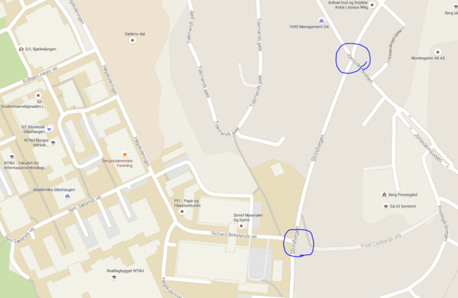

During the empathy phase, we talked to a friend of one of the team members who is a part time taxi
driver, and asked him what he thought of the idea of autonomous cars. His name is Mikael, and he
studies computer science, 5th year. When we asked him what he thought of autonomous cars he said:
"I like the idea of autonomous cars, and I think it's the future. I realize I will be out of work
once it's fully incorporated into the society though."
After discussing the topic for a while, he came to a sudden realization:
"...but a taxi driver's job isn't only to drive a person from one place to another. Our job is also
to function as a guide for the passenger, and a person who knows the local culture, and has general
local knowledge. Think about if
a drunk guy drives an autonomous taxi, but he doesn't remember where he lives for example."
We were encouraged by our student assistant to try to observe traffic and drivers, in particularly difficult intersections. Our goal was to see how drivers communicated with each other non-verbally, and perhaps find patterns in the driving behaviour of different user groups. The intersections we chose to observe was right next to Gløshaugen and had no traffic lights.

We noticed that:
We drove around with some of our friends who were not familiar with the driver in order to see their reactions to a new situation. One time we were driving around with Didriks friend, Eivind. He explained how he was used to reckless driving, how his sister crashed the family car three times and that he loved speed and acceleration. He was really calm during the first twenty minutes of driving, which kind of annoyed me considering the previous passengers had been more on the edge. I decided to test him in the roundabout at Moholt and on the highway with high speed. He did not react. I kept on accelerating. He did not react. I had to pass a couple of cars in order to maintain my speed. The backseat which consisted of Didrik and Jardar who had previously been asking Eivind a bunch of questions, went quiet. Eivind took notice at the speed, but remained calm as Didrik made a loud remark: “We can’t afford a speeding ticket Henrikke!”. Here is a video of the test-driving:
Here is another test-driving:
We included car dealers as a stakeholder in our project, because they know a lot about the features
in their cars, including the autonomous ones. They talk to a lot of customers, and possible users of
the future autonomous cars. We interviewed both a Volvo salesman and an Audi salesman.
“The technique is there, it is just not on the market yet because the world isn’t ready yet.”
–Volvo Salesman
Volvo wants to let their cars communicate with the traffic lights, but the government is scared of
hacks and privacy issues. The new cameras for their new models are ready but will probably only be
introduced in 5 to 10 years, meaning people need a slow transition into these autonomous cars in
order to accept them.
From the Audi sales man we learned that in one of their cars it is possible to trick the car and
make it drive autonomously.
“I can let go of the steering wheel for a short period of time, then an alarm will go off. I tried
to hang a horseshoe on the steering wheel, the car accepted it and kept on driving itself.”
–Audi Salesman
Their cars are ready to drive themselves, but the trust and safety issue of the cars is too big.
Customers tend to be sceptic about the autonomous features, because they have to give up their
control.
We asked the salesmen if they would trust an autonomous car which was approaching them on the
streets. Only the Volvo salesman would trust it since he saw how the cars have been tested and
trusts the car brands that they won’t put a risk on the market. The other salesmen were more sceptic
since they believe in the human response in traffic.
We were interviewing people outside and we met people with a lot of different opinions. Here are
opinions of some of the people we met:
A girl that tried to make us attend Ukelabanken.
- Suggested an emergency stop button, that makes the car drive to the side of the street and
stop.
- Positive about autonomous cars, but a little sceptical in the beginning. The technology needs to
mature for her to trust it.
- The car should also give feedback on laws/rules.
A first year chemistry student from NTNU.
-Positive about autonomous cars, would like to try it in the future.
-If possible, it would be nice to have big space in the car, so he can have some social activities
in the car with friends. And he can do his work in the car.
- The car have inside sensors to observe the passenger, if the passenger is busy with reading, or
working, just drive normally to the destination, if the passenger is looking out the window and
enjoy the view, the car could drive slower.
An american boy and a german girl. Both study master in information systems.
The american trusts more in machines than humans because of human errors.
- When in an autonomous car, you don’t need to concentrate on the road. That means we could do lots
of changes in the design of the interior of the car. Perhaps we could make room in front to make it
possible to play games or other social activities, make the car driving experience more
soothing.
- The roads should be developed especially for autonomous cars. Think of the times when we had to go
from horse-wagons to cars. The roads had to change, and he thinks the same has to happen to
autonomous cars.
The german girl is a little more sceptical.
- Could only trust them if all vehicles where autonomous. A mix of autonomous cars and human driven
cars would be scary/unsafe. That is because it is very hard for a computer to foresee how a human
being will behave.
- The car should have a panic mode, where a human can take over the steering of the car.
In the cafeteria on NTNU we met two professors, both in the field of physical electronics and in the age of 60-70, who were having coffee. They got very eager when we asked them about autonomous cars.
"I think it's the future."
-Professor 1
"I do also, but I think it's very far away still. I'm skeptical, and I definitely wouldn't use it if it existed right now!"
-Professor 2
They are apparently very in to the technical aspects of it, and quickly begins to discuss algorithms, fuzzy logics, big data, etc. They also come up with an interesting viewpoint:
"Who would get the legal blame if something happens? Is it the driver? The software company? The engine manufacturer?"
-Professor 1
When we asked them what they would do if they could sit in an autonomous car right now, one answers:
"I would try to not pay attention to what it's doing. Just try to relax and hope for the best."
-Professor 2
Businness men: Miljøpakken and Statens Vegvesen We talked to multiple people in Miljøpakken and in Statens Vegvesen. They said many useful things. Among them was the need for a good pedal, the feeling of it and the response in the way that it communicates with you. Another aspect was the time pressure; they are busy people who want to utilize their time the most. During long trips, he would sleep and use some of his time for other things. There is a need for a manual mode, a way for the passenger to take over the car and an emergency break in case something goes wrong. The last aspect we want to talk about is safety, which was also brought up by everyone, including the people we had in the test-driving. They all believed in computers, a computer does not make mistakes and implementing ac’s in the traffic would reduce the number of accidents and actually make the world a safer and better place. However, there is still the need for a manual mode, just in case.
During this empathy process, we've gathered many thoughts and perspectives. We realized that people
have a very varied understanding of autonomous cars, how they are now and what they probably will
become. Many are positive to the idea, but there are also a lot of skeptics. Getting the world's
population on the same level of understanding and acceptance will be a big challenge for the
development of autonomous cars.
We found some great insights from empathizing and immersing with people. We quickly understood that
trust is a very important issue, both from the driver's and the environment's perspective. Getting
people to have faith in the technology, and to maintain the human element of driving will be crucial
to the success of the idea of autonomous cars. We decided to focus on the interaction between the
driver and the autonomous car, as well as the interaction between the car and the environment.